1. Правило додавання
використовується, якщо ми шукаємо ймовірність
події А або В, тобто, якщо говорять "або" - маємо додавати. Якщо події А та В - сумісні,
тобто поява однієї з них не виключає
можливості появи іншої, то правило додавання має вигляд:

або
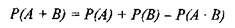
(10)
Формула (9) стверджує, що ми
повинні додати ймовірності
двох
випадкових подій і відняти ймовірність сумісної появи подій А та
В.
Однак, якщо події А та В - несумісні, то
ймовірність їх
сумісної
появи дорівнює нулю (згідно означення несумісних подій,
вони не
можуть з'явитись одночасно, тому
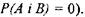
Отже, для
несумісних подій правило додавання прийме вигляд
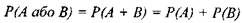
(11)
Приклад 7.
Карта, витягнута з колоди, що містить 52 карти.
а) Яка ймовірність, що
витягнута карта буде тузом або
піковою картою?
б) яка ймовірність, що
витягнута карта буде червовою
або бубновою?
Розв'язання, а) Позначимо події:
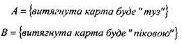
Тоді
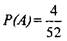
і
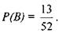
Більш того, А і В - сумісні події. Фактично
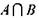
- це
подія, яка полягає в тому, що витягнута карта буде піковим тузом. Отже,
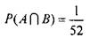
Подія, яка
полягає в тому, що витягнута карта буде тузом або піковою
картою, позначимо як
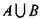
.
Тоді ймовірність події
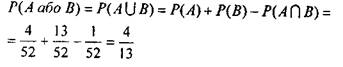
Позначимо
події:
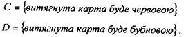
Події
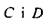
- несумісні (одночасно не
можна витягти
карту, яка буде і червовою, і бубновою), тому
ймовірність сумісної появи подій С і D дорівнює 0. Згідно формули (10)
маємо
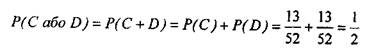
2. Правило множення використовується для знаходження ймовірності сумісної появи подій А та В. Якщо А та В- незалежні
події,
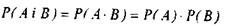
(12)
Однак, якщо А і В - залежні події,
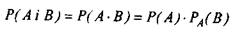
(13) Зауважимо, що формула (12)
містить
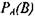
--
умовну ймовірність.
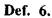
Ймовірність події В, обчислена за умови
появи події А, називається умовною
ймовірністю події В і
позначається

Взагалі, умовну ймовірність можна обчислити як
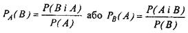
(14)
Приклад
8. Кидається пара гральних кубиків. Яка ймовірність того, що сума чисел, які випадуть на
верхніх гранях обох кубиків, дорівнює 7, якщо одне із цих чисел 5?
Розв'язання.
Позначимо події:
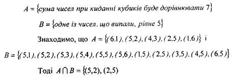
Так як кубики однакові, то наслідки випробування рівноможливі і тому
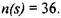
Отже,
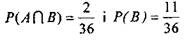
Таким
чином, ймовірність того, що сума чисел, які випали на верхніх гранях при
киданні кубиків, дорівнює 7, якщо одне із чисел рівне 5, згідно формули (14)

Приклад 9.
Серед 300 студентів старшокурсників вищого закладу освіти 140
чоловіків. Відомо, що 80% чоловіків та 60% жінок мають
права водіїв. Навмання вибрали одного студента.
 Яка ймовірність, що випадково вибраний студент -чоловік,
що має водійські права?
Яка ймовірність, що випадково вибраний студент -чоловік,
що має водійські права?
 Яка ймовірність, що випадково вибраний студент виявиться жінкою, котра не має водійських прав?
Яка ймовірність, що випадково вибраний студент виявиться жінкою, котра не має водійських прав?
Розв'язання, а) Позначимо події:
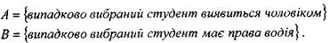
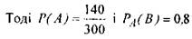
Подія, що полягає в тому, що випадково вибраний
студент мас права водія, буде
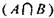
. Згідно правила добутку
ймовірність цієї події обчислюється як
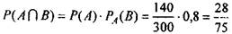
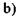
Позначимо
події:
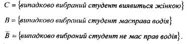
Маємо
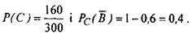
Зауважимо,
що використано правило знаходження протилежної події в обчисленні
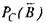
Подія, яка
полягає в тому, що випадково вибраний студент виявиться жінкою, яка не має прав
водія, є
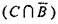
і тому згідно
правила добутку ймовірність цієї події дорівнює
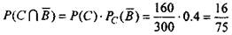
Правило
добутку може бути узагальнено на випадок, що включає будь-яку скінчену
кількість подій.
Наприклад,
у випадку трьох залежних подій, можна довести, що
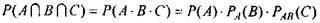
(15)
Два основних
правила ймовірності узагальнено на Рис. 2, для нагадування необхідності
додавання, якщо використано сполучник "або"
та множення при використанні сполучника "і".
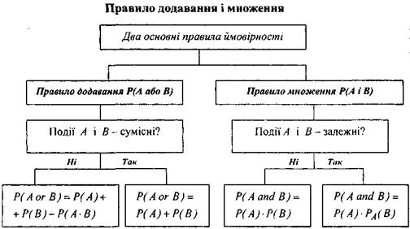
Рисунок 2
Приклад 10. Марк купив три різні акції. Ймовірність зростання в
ціні І акції дорівнює
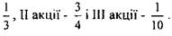
Визначити ймовірність того, що
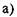
всі акції зростуть в ціні,
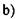
ні одна акція не зросте,
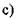
тільки одна акція зросте в ціні,
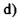
зросте в ціні тільки І акція,
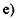
хоча б одна акція зросте в ціні.
Розв'язання. Позначимо
події:
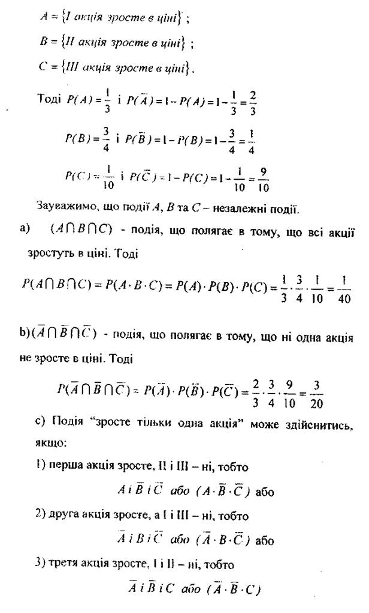
|
Якщо хоча б один
із розглянутих, варіантів буде мати місце, подія "зросте тільки одна
акція" обов'язково здійсниться. Отже,
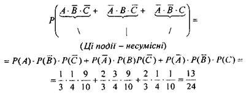
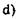
Подія "зросте в ціні І акція" може здійснитись,
якщо І акція зросте, а II і III - ні, тобто
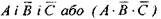
Отже,
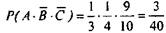
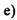
Події "зросте хоча б одна акція" та "не
зросте ні одна" - протилежні події.
Отже, Р("зростехоча б одна") - 1
- Р("не зросте ні одна"), тобто
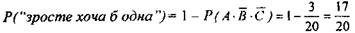